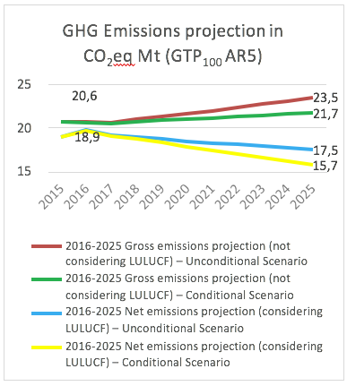
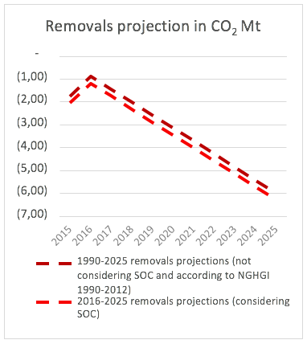
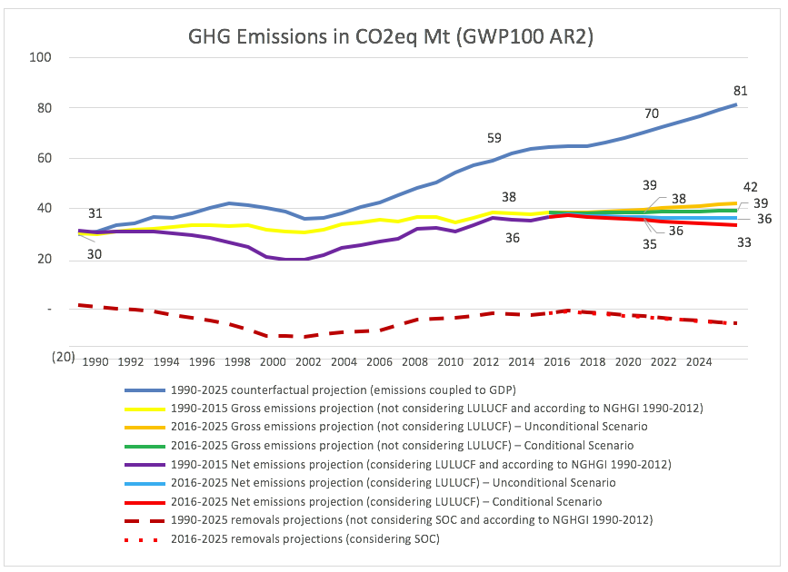
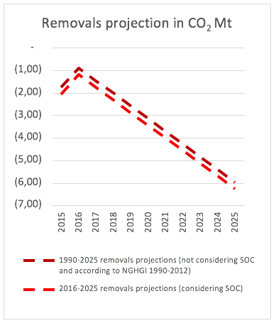

ORIENTAL REPUBLIC OF URUGUAY
First Nationally Determined Contribution to the Paris Agreement
(Unofficial translation)
This First Nationally Determined Contribution was approved by Executive Decree number 310 in November 3rd of 2017, in the framework of the Paris Agreement, ratified by the Oriental Republic of Uruguay on October 19th, 2016
The Nationally Determined Contribution (hereinafter NDC) aims at attending the provisions established under the Paris Agreement, as well as to promote adaptation and mitigation measures in Uruguay to face the challenge of climate change, under the National Climate Change Policy so as to contribute to the country’s sustainable development with a global perspective of intra and inter- generational equity and human rights, thus seeking a more resilient, less vulnerable society, with greater capacity to adapt to climate change and variability, and also a society that is more conscious and responsible towards the challenge of climate change, promoting a low-carbon economy, based on environmentally, socially and economically sustainable productive processes and services, by including knowledge and innovation.
Uruguay’s NDC includes the following sections: section one presents climate change mitigation objectives; section two presents the context and main measures that contribute to attaining mitigation objectives; section three presents the context and main measures of adaptation to the adverse effects of climate change (this section must be considered the first Adaptation Communication); section four presents the context and key measures relative to capacity building and knowledge creation on climate change; the fifth and final section includes information to provide transparency and to improve the understanding of the climate change mitigation objectives, and to facilitate monitoring their progress.
As per Paragraph 23 of the National Climate Change Policy (hereinafter PNCC), the NDC helps to implement such policy, and was prepared within the National Response System to Climate Change and Variability (hereinafter SNRCC), including its public consideration between 24th August and 24th September, 2017. The revised draft after the public consultation was considered by the National Environment Cabinet between 12th and 19th October, 2017.
This NDC is in line with the following international and national instruments: the United Nations Framework Convention on Climate Change (hereinafter the Convention), ratified by Uruguay on 18th August, 1994 and approved by Law No.16.517 of 22nd July, 1994; the Paris Agreement, ratified by Uruguay on 19th October, 2016 and approved by Law No. 19.439 of 17th October, 2016; the 2030 Agenda for Sustainable Development, including the Sustainable Development Goals, adopted through Resolution 70/1 of the General Assembly of the United Nations on 25th September, 2015; the General Law on Environmental Protection No. 17.283 of 28th December, 2000; the National Climate Change Policy (hereinafter PNCC), the National Climate Change Response Plan, adopted by the Coordinating Group of the National Response System to Climate Change and Variability in January 2010; and the Constitution of the Republic and subsequent national laws: Law-Decree No. 15.239, dated 23rd December of 1981, on the Use and Conservation of Soils and Superficial Waters destined to agriculture ends; Law No. 15.939, dated December 28th of 1987 on the Forestry Fund – Natural resources; Law No. 17.234, dated February 22nd of 2000 on the creation and management of National Protected Areas System; Law No. 18.610, dated October 2nd of 2009 on the National Water Policy; Law No. 18.195, dated November 14th of 2007 on the promotion, and regulation of the production, commercialization and utilization of Agrofuels; Law No. 18.308, dated June 18th of 2008 on Land-Use Planning and Sustainable Development; Law No. 18.59, dated September 21th of 2009 on Efficient Use of Energy; Law No. 18.621, dated October 25th of 2009 on the creation of a Public and Permanent National Emergency System; Law No. 19.158, dated October 25th of 2013 on the creation of the Uruguayan Institute of Meteorology; Law No. 19.272, dated September 18th, 2014, on decentralization and citizen participation, and article 33 of Law No. 19.355 of 2015, dated December 19th, 2015, on the establishment of the National Environment, Water and Climate Change Office.
Section I
Climate change mitigation objectives
Hereby Uruguay’s climate change 2025 mitigation objectives. These objectives are considered fair and ambitious considering that Uruguay is a developing country; the particularities of the country’s Greenhouse Gases (hereinafter GHG) emissions, which mainly come from food production; the country’s share of global emissions (0.05% of global emissions)1, as well as its historical participation.
Mitigation objectives are set assuming that there will be no structural transformations of the current production matrix in Uruguay and considering official economic growth projections for the 2017-2025 period.
They cover 99.4% of the GHG emissions of the 2012 National Greenhouse Gases Emissions Inventory (hereinafter NGHGI 2012), according to AR2 GWP100:
|
GHG |
2025 mitigation objectives |
NGHGI sectors(except LULUCF) |
|
|
Intensity reduction (GHG emissions per GDP unit) from base year 1990 |
|||
|
Unconditional |
Conditional on additional specific means of implementation |
||
|
CO2 |
24% reduction in CO2 emissions intensity per GDP unit |
29% reduction in CO2 emissions intensity per GDP unit |
Energy, including Transport, and Industrial Processes 22.2% of GHG emissions, NGHGI 2012 in AR2 GWP100 |
|
CH4 |
57% reduction in CH4 emissions intensity per GDP unit |
59% reduction in CH4 emissions intensity per GDP unit |
Energy, Agriculture, including Cattle Raising, Waste and Industrial Processes 43.2% of GHG emissions, NGHGI 2012 in AR2 GWP100 |
|
N2O |
48% reduction in N2O emissions intensity per GDP unit |
52% reduction in N2O emissions intensity per GDP unit |
Energy, Agriculture, including Cattle Raising, Waste and Industrial Processes 34.0% of GHG emissions, NGHGI 2012 in AR2 GWP100 |
They cover 51.1% of GHG emissions (AR2 GWP100) for NGHGI 2012:
|
GHG |
2025 mitigation objectives |
Food production activity |
|
|
Intensity reduction (GHG emissions per product unit) from base year 1990 |
|||
|
Unconditional |
Conditional on additional specific means of implementation |
||
|
CH4 |
32% reduction in CH4 emissions intensity per product unit (kg of beef cattle measured in live weight) |
37% reduction in CH4 emissions intensity per product unit (kg of beef cattle measured in live weight) |
Beef Production 33.6% of GHG emissions, NGHGI 2012 in AR2 GWP100 |
|
N2O |
34% reduction in N2O emissions intensity per product unit (kg of beef cattle measured in live weight) |
38% reduction in N2O emissions intensity per product unit (kg of beef cattle measured in live weight) |
Beef Production 17.5% of GHG emissions, NGHGI 2012 in AR2 GWP100 |
The Land Use, Land-Use Change and Forestry (LULUCF) sector presented net removals in NGHGIs between 1998 and 2012.
|
GHG |
Carbon pools/ Land use categories |
2025 Mitigation Objectives |
|
|
Conservation of stocks |
|||
|
Unconditional |
Conditional on additional specific means of implementation |
||
|
CO2 |
Living Biomass in Forest Lands |
Maintenance of 100% of the native forest area of year 2012 (849.960 ha) |
5% increase in the native forest area of year 2012 (892.458 ha) |
|
At least maintenance of 100% of the amount of forest plantations effective area under management of year 2015 (763.070 ha) |
--- |
||
|
Maintenance of 100% of the shade and shelter forest plantations area of year 2012(77.790 ha) |
25% increase in the shade and shelter forest plantations area of year 2012, including silvopastoral systems(97.338 ha) |
||
|
Soil Organic Carbon (SOC) in Grasslands, Peatlands and Croplands |
Avoid CO2 emissions from SOC in 10% of the grasslands area (1.000.000 ha) |
Avoid CO2 emissions from SOC in 30% of the grasslands area (3.000.000 ha) |
|
|
Avoid CO2 emissions from SOC in 50% of the peatlands area of year 2016 (4.183 ha) |
Avoid CO2 emissions from SOC in 100% of the peatlands area of year 2016 (8.366 ha) |
||
|
Avoid CO2 emissions from SOC in 75% of the cropland area under Plans of Soil Use and Management of year 2016 (1.147.000 ha), as well as CO2 sequestration in the remaining 25% of the area (383.000 ha) |
--- |
||
Uruguay presents global 2025 climate change mitigation objectives of its NDC regarding intensity in relation to its gross domestic product and to base year 1990. It also includes specific objectives related to Food Production (beef) and Land Use, Land-Use Change and Forestry (LULUCF).
It also distinguishes between unconditional objectives and objectives which are conditional on additional specific means of implementation. These objectives cover 99.4% of the GHG emissions of the National Greenhouse Gases Emissions Inventory (hereinafter NGHGI 2012), according to AR2 GWP100; NGHGI 2012 is the latest inventory available and submitted to the Convention.
When analyzing the mitigation objectives in this NDC, it must be considered that Uruguay is a developing country with an economy that must continue growing to create more opportunities to its inhabitants; a country that must continue fighting against poverty and indigence, as well as building a higher level of social equity, all of which must be done over time with less than a proportional impact on the climate system.
Uruguay's contribution to the last objective of the Convention and to the objective of the Paris Agreement focuses on developing with the least GHG emission intensity as possible, “decarbonizing” its economy over time and also adapting by reducing its vulnerability and increasing its resilience, all of which should be done in a way that does not threaten food production.
Uruguay has decided to present mitigation contribution objectives broken down per gas, given how relevant the discussion on common metrics2 can be when allocating priorities for the country's mitigation strategies, since Uruguay’s emission profile is strongly determined by non-CO2 GHG emissions. This decision considers what was indicated by the Intergovernmental Panel on Climate Change (hereinafter IPCC) in 20143: “the GWP metric is not directly related to a temperature limit, as the 2°C target..., whereas other metrics like the GTP may be more suitable for this purpose”, thus calling upon further debate on the implications of the different metrics and “to define metrics that can be useful to users and policymakers”
Furthermore, this way to present the contribution objectives also considers that the Conference of the Parties serving as the meeting of the Parties to the Paris Agreement (hereinafter CMA) has yet to approve the common metrics assessed by the IPCC, to be used for accounting of GHG emissions and removals in the NDC under the Paris Agreement.
Global climate change mitigation objectives include all the emitting sectors in the NGHGI 2012, such as the Energy Sector (which represents 95% of the CO2 emissions), which includes Transport; Industrial Processes; the Agriculture Sector (which represents 93.4% of CH4 emissions and 98.7% of N2O emissions), which includes cattle raising, and the Waste Sector. It should be noted that Uruguay has already made progress in the reduction of GHG emission intensity regarding GDP in all these sectors, and in some cases there have been absolute reductions, as in power generation and also afforestation.
Uruguay’s emission profile is strongly marked by food production: using AR2 GWP100, according to NGHGI 2012, 73.8% of the total emissions correspond to the agricultural sector: two thirds of which correspond to beef production. That is why Uruguay has a specific emission intensity objective in relation to unit produced, in this case, amount of beef cattle produced (measured as kg of live weight of beef cattle).
Uruguay also presents a set of objectives for the LULUCF sector. The country has proposed to preserve the existing carbon stocks in the native forest by maintaining its area. Similarly, regarding forest plantations, a minimum forested effective area under management is set, which the country will preserve regardless production cycle fluctuations. By setting an objective on the stock, we can assume a contribution that may represent progress regarding the previous NDC, in a sector that is inherently limited for such progress, from the traditional flow approach. The shade and shelter forest plantations area is to be maintained as well, including silvopastoral systems, with the aim of preserving carbon stocks in these areas. Finally, there are objectives regarding the maintenance of soil organic carbon; in grasslands under good land-management practices, in peatlands and in the agricultural area under Plans for Soil Use and Management, required by law since 2013, including sequestration when there are crops in rotation with long-cycle pastures.
As mentioned, the objectives submitted by Uruguay are set unconditionally and conditional on additional specific means of implementation the country may receive, through funding, technology development and transfer and capacity building. Mitigation measures which the country plans to develop subject to the support available are presented later in the document, as well as a list of the main adaptation measures to take in parallel with mitigation ones, promoting synergy between the two, as appropriate. It should also be noted that it is essential to have support to fully implement these adaptation measures. Finally, cross-cutting measures are included regarding knowledge and capacity-building.
Section II
Context and main measures towards climate change mitigation objectives
Uruguay seeks a sustainable development process, where economic growth decouples from GHG emissions. In this sense, it must be noted that for the last 12 years (2005 – 2016) Uruguay has grown at an average annual rate of 4.6%. During this period, energy demand from the industrial sector quadrupled and food production was three and a half times greater. This growth brought along a significant decline in poverty rates, from 39.9% to 9.4%, while extreme poverty was virtually eradicated, dropping from 4.7% to 0.2%, reaching a Gini Index of 0.38. Emissions had a 0.8% cumulative annual increase between 1990 and 2012 (last NGHGI available, including LULUCF and AR2 GWP100).
Uruguay’s dynamic growth was possible then, with a reduction of the aggregate intensity of emissions throughout its economy, with a reduction in absolute emissions in some key activities such as power generation, mainly thanks to the alignment of national public policies related to climate change, sub-national and sectoral public policies, and actions taken by the private sector, the academia and the civil society.
This was strengthened after creating an institutional framework for climate change, through the National Response System to Climate Change and Variability4 (hereinafter SNRCC) and the recent creation of the National Environmental System; the National Environmental Cabinet and the National Environment, Water and Climate Change Secretariat, as well as with the development of instruments such as the National Climate Change Response Plan in 2010 and the implementation of a series of specific successful sectoral policies. These efforts came together in the development and recent adoption in April 2017 of the National Climate Change Policy, a strategic and programmatic instrument that provides the framework to this first NDC and the subsequent NDCs to be submitted in five-year cycles.
As mentioned above, to contribute to the implementation of a new model of resilient and low-carbon development, Uruguay has enforced in the past few years an ambitious set of early measures, particularly in several key sectors. This was made possible by a large volume of investments promoted by public policies. For example, in the energy sector, the matrix transformation was possible through a public-private investment accumulated for several years, which reached, on average, 3% of the GDP per year.
The State also contributed to reducing the emissions of the economy by granting tax benefits to investments in low-carbon production capacities, like afforestation. In this sector, half the plantation costs were subsidized for almost 15 years. Additionally, renewable energy projects were supported under the investment promotion system. In addition, in the cattle raising sector, dairy farming and rice production, public policies fostered large investments and technological changes. This allowed for an increase in productivity and a reduction in emission intensity per unit produced.
Uruguay’s production and economic growth mentioned above were strengthened by the increase in agro- industrial production, which covers 70% of exports (through which Uruguay currently produces food for 28 million people), and by the important growth of other new industries and services, such as energy, tourism and new technologies. Uruguay takes the opportunity and accepts the challenge to continue expanding its food production levels through reliable and environmentally sustainable food for a growing population, so it understands its role in safeguarding food security in line with the Paris Agreement.
Below, a brief description of the recent evolution of the NGHGI sectors is provided followed by the mitigation measures already implemented and those in progress, as well as the 2025 ambition levels for each of the objectives mentioned in the previous section. It should be noted that in addition to the specific mitigation measures implemented and those in progress in emitting sectors, the dynamic performance of the national economy in sectors with lower emissions, such as services and other capturing activities like afforestation, have led to the decoupling of economic growth and GHG emissions.
On CO2 emissions
According to NGHGI 2012, CO2 emissions, excluding the LULUCF sector, account for 22% of the total emissions of the NGHGI (AR2 GWP100). Furthermore, the energy sector represented 95% (8,199 Gg) of the total CO2 emissions in Uruguay, including transport, while the remaining 5% (420 Gg) is generated in the industrial processes sector. On the other hand, the LULUCF sector captured 2,126 net Gg through the increase in the forest plantations area.
Regarding emissions from power generation, within the “2005-2030 Energy Policy” Uruguay has made a great effort to attain a clean energy matrix, reaching 57% of renewable sources in the primary energy mix in 2015. This ratio was 90% for the total energy consumed by the industrial sector, and 92% for power generation (National Energy Balance 2015, Ministry of Industry, Energy and Mining)
According to the Agrofuels Law, Uruguay has set forward a compulsory minimum level of biodiesel and bioethanol (both entirely produced in the country) to be used in the gasoline and diesel mixtures sold in the country for motor vehicles. On the other hand, early actions to decarbonize power generation allow for the opportunity to reduce emissions in the transport sector by incorporating electric vehicles, noting that transportation accounted for 55% of emissions from the Energy Sector in 2015. Thus, in order to promote sustainable mobility systems, measures have been taken to foster electrification, both in public transport (buses and taxis) and in utility and private vehicles. In this sense, the implementation of measures that aim to improve urban mobility management is also considered, in particular, those measures that target public transport to help increase its use and to promote active transportation.
Thanks to early measures, total emissions from the energy sector in relation to the country’s GDP are very low compared to the world average. In 2015, the intensity of emissions in the sector was 119g CO2/USD, a third of the world intensity5, even far below the average for OECD countries (Organization for Economic Cooperation and Development). The structural transformation of the power generation matrix will allow the country to halve absolute emissions in 2017 compared to 1990, although power consumption has almost tripled. This reduction will be achieved by the implementation of measures that promote non-traditional renewable sources (wind, solar, biomass residues) in addition to traditional hydropower.
In addition to the powerful measures that favor the inclusion of renewable energies, Uruguay will contribute to the reduction of emissions by implementing measures to promote energy efficiency in the residential, industrial and transport areas. Specifically, the country is developing regulations and incentives that promote construction materials that favor energy efficiency, as well as the use of energy-efficient lighting and the implementation of changes in public transport.
This context enables Uruguay to contribute towards 2025 with an unconditional mitigation objective for an intensity reduction (CO2 emissions per GDP unit) of 24% compared to 1990 values. It also allows the country to aspire to a 29% mitigation objective conditional on additional and specific means of implementation by 2025.
On CH4 emissions
According to NGHGI 2012, CH4 emissions account for 43% of the total emissions of the NGHGI (AR2 GWP100). Additionally, 93% (746 Gg) of total CH4 emissions in Uruguay were generated in the Agriculture sector, while the Waste sector accounted for 6% (47 Gg) of emissions, and the Energy sector for the remaining 1% (6 Gg). In the Agriculture sector, beef production accounted for 83% (622 Gg), which represented 78% of the total CH4 emissions.
Given the relevance of emissions in beef production, as they are of biological origin, and as, under the Paris Agreement, Uruguay must mitigate climate change in a way that does not threaten food production, the national challenge focuses on reducing emission intensity per unit produced, and that is why Uruguay presents a specific indicator.
In this sense, in the last 25 years Uruguay has significantly reduced the intensity of emissions in beef production. This evolution is explained by the increase in productivity thanks to the national and international economic contexts and the implementation of public policies that supported the private sector in the process of adopting productivity enhancing technologies. These actions have been reinforced since 2010 with the implementation of the Climate-Smart Agricultural Policy. It is particularly worth noting those actions that seek to promote the adoption of technologies for forage management in the phases of cattle breeding and raising, based on natural grasslands feeding, as well as cattle management measures, which improve the efficiency of beef production and, at the same time, eliminate carbon loss from soils, and can increase its stocks.
Given the importance of the emissions from cattle raising activities, the increase in meat production in the country has been achieved up to the present with a very slight increase in total emissions in this sector. In future, we could consider the ambitious objective that methane and nitrous oxide emissions become stable or even fall, as productivity increases will improve herd efficiency, and to achieve the improvement of key parameters to control emissions, such as improvement in the average quality of the diet based on natural grasslands (higher mean digestibility) and a reduction in the methane emission rate per unit of food ingested (Ym) of around 15%.
Regarding the remaining agricultural activities included in the agricultural sector, that accounted for 16% (128 Gg) of total CH4 emissions according to NGHGI 2012 INGEI, they have declined in terms of intensity (emissions measured in terms of GDP) in the past 25 years through the implementation of practices that improved productivity and the public policies mentioned above.
In the Waste sector, the relative reduction of emissions has taken place through measures that enable the capture and burning of CH4 in landfills (in some cases with power generation) and cogeneration from agroindustrial and forestry waste, as well as by the promotion of industrial wastewater treatment systems that consider the capture and burning of biogas in anaerobic systems.
This context enables Uruguay to contribute towards 2025 with an unconditional mitigation objective for an intensity reduction (CH4 emissions per GDP unit) of 57% compared to 1990 values. It also allows the country to aspire to a 59% mitigation objective, conditional on additional and specific means of implementation by 2025.
Regarding beef production emissions, Uruguay will have a 2025 unconditional mitigation objective for an intensity reduction (CH4 emissions per unit of beef cattle produced, measured in kg of live weight) of 32% compared to 1990 values. It also allows Uruguay to aspire to a 37% mitigation objective conditional on additional and specific means of implementation by 2025.
On N2O emissions
According to NGHGI 2012, N2O emissions account for 34% of the total emissions of the NGHGI (AR2 GWP100). Additionally, 98% (42 Gg) of total N2O emissions in Uruguay were generated in the Agriculture sector, while the Waste sector accounted for 1% (0.4 Gg) of emissions, and the Energy sector for the remaining 0.6% (0.3 Gg). In the Agriculture sector, beef production accounted for 52% (22 Gg), which represented 51% of the total N2O emissions.
For the same reasons stated above for CH4 emissions in beef production, efforts to mitigate N2O emissions generated by this activity have focused on the reduction of emission intensity per kilogram of live cattle produced.
Regarding the remaining agricultural activities included in the Agriculture sector, which accounted for 47% (20 Gg) of the total N2O emissions according to NGHGI 2012, they have declined in terms of intensity (measured in terms of GDP) due to an increase in productivity and to soybean crop advance, since as a leguminous species it requires lower nitrogen fertilization.
This context enables Uruguay to contribute towards 2025 with an unconditional mitigation objective for an intensity reduction (N2O emissions per GDP unit) of 48% compared to 1990 values. It also allows the country to aspire to a 52% mitigation objective conditional on additional and specific means of implementation by 2025.
Regarding beef production emissions, Uruguay will have a 2025 specific unconditional mitigation objective for an intensity reduction (N2O emissions per unit produced, measured as kg of live weight of beef cattle) of 34% compared to 1990 values. It also allows Uruguay to aspire to a 38% mitigation objective conditional on additional and specific means of implementation by 2025.
On the conservation of carbon stocks
According to NGHGI 2012, the LULUCF sector sequestered 2,126 net Gg of CO2 in living biomass. This capture is explained by the increase in the forest plantations area, by the age structure of the plantations and by the logging shifts.
Native forest:
Native forests cover 4.8% of the national territory, where logging is prohibited as per the Forest Act (with a few exceptions specified in the law). Jointly with the tax exemption incentives for areas with native forests registered before the General Forest Directorate, this has made it possible to preserve the area of this ecosystem and Uruguay will be able to achieve the unconditional objective set to preserve 100% of the current area of native forest. However, in the last few years degradation processes in native forests in the country have been identified, issues which will be addressed through the REDD+ strategy under elaboration in Uruguay. Therefore, within this strategy, the country expects not only to increase carbon stocks through the restoration of degraded areas, but also to identify opportunities to enhance carbon stocks by increasing the area of native forests. This explains the conditional objective that Uruguay has defined for native forests, that is to say that with additional specific means of implementation, an increase of 5% in area is expected for 2025.
Forest plantations:
The area of forest plantations has increased significantly in Uruguay, as a result of the adoption and implementation of the Forest Act. This has directly influenced Uruguay's GHG inventory, and forest plantations accounts for most of the CO2 removals from the LULUCF sector. To set the objective related to forest plantations, the country has defined a minimum amount of area that will remain as effective area under forest management in the successive NDCs, regardless of the planting, growing and harvesting cycles, preserving 100% of the effective area of 763,070 ha of 2015. This area represents a carbon stock of 32,153 Gg of C, which is equivalent to around 117,894 Gg CO2, which corresponds to 3.3 years of average emissions in Uruguay between 1990 and 2012 with GWP metric. Furthermore, for 2025 a net sequestration (emissions minus removals) of 2,853 Gg of CO2 emissions is estimated, as compared to the 1990-1994 period, when there was no capture, but rather an average of 214 Gg of CO2 was released. In this sense, the forestry sector reflects a sustained increase in carbon stocks in biomass, which will continue to expand in the estimate for 2025. Uruguay is also working technically to report the harvested wood products carbon pool for subsequent NGHGIs, which better represents the emission flows of the harvest of forest plantations. Depending on the purpose, paper or wood for the mechanical processing industry, emissions deferred between 2 and 35 years can be considered.
Shade and shelter forest plantations, including silvopastoral systems:
Given the importance of livestock production in Uruguay, the area of shelter and shade forest plantations that support this production and provide well-being to the animals are essential in the country. This is why Uruguay’s unconditional objective is to keep 100% of the current area of shelter and shade forest plantations for 2025, thus preserving the carbon stock in these areas. In addition, subject to additional means of implementation, the country aims to increase by almost 10,000 hectares the area of shelter and shade forest plantations for livestock and in almost 10,000 hectares the area of silvopastoral systems, which will represent an additional sequestration of 393 Gg of CO2 per year.
Grasslands:
A transformational change is being promoted in the management of natural grasslands through a new paradigm that consists in adjusting the supply of forage, regenerative management and management of nitrogen inputs and outputs. Therefore, for 2025, Uruguay has set the unconditional objective of having 1,000,000 ha of natural grasslands (10% of grassland area) managed under this new paradigm, which stop losing soil organic carbon and can sequester carbon. With additional specific means of implementation, the area of natural grasslands under this new paradigm will be of 3,000,000 ha (30% of the total area of grassland).
Uruguay has not enough national research on carbon sequestration rates in soils by changing the management practices of grasslands. This is why Uruguay has set a conservative target for 2025, which implies that in the grasslands in which practices are changed, carbon is no longer lost. Research is being conducted to calibrate the tools to accurately report the actual changes in this carbon “pool” as soon as possible in the NGHGI, and at least at the time of checking the objectives of this NDC.
Peatlands:
By developing a National Wetlands Inventory to identify and define the different categories of wetlands according to the categories of the Ramsar Convention, it has been observed that wetlands occupy 12% of the national territory (over 2 million ha). Within that area, we have identified 8,366 ha of peatlands that contain accumulated carbon in the peat. Currently we lack the characterization needed to estimate the carbon stock contained in that peatland area. Therefore research will be conducted to obtain such quantification. Peatlands identified in Uruguay are mainly within the Ramsar East Wetlands site (which covers over 430,000 ha). Therefore, through activities that promote the conservation and rational use of wetlands within the implementation of the Ramsar Convention, Uruguay will maintain at least 50% of the peatlands area without additional means of implementation; a 100% can be achieved in a conditional scenario, with greater resources for the management of this area.
Croplands:
An objective is presented for soil organic carbon: virtually all (98%) the agricultural area of cereals and oilseeds in the country is under Land-Use and Management Plans, required by law from 2013. These plans are based on the use of soil by its capacity for use. In average terms, this resulted in 90% of agriculture activities being performed through no-till farming, no bare soils remaining (without stubble), mainly in winter, as winter, cover and services crops cover 98% of the soybean area. There has been an estimated 30% increase in the yearly area planted with summer C4 grasses (sorghum and maize) or that goes to the pastures cycle. These management practices minimize losses and/or increase soil organic carbon stocks. In this sense, it is set that soil organic carbon is to be preserved in 75% of the croplands area and, conservatively, that organic carbon in the soil will be sequestered in 25% of the area under crop – sown pastures rotations at an estimated rate of 0.2 ton/ha/year in the soils.
Hereby a list of measures to mitigate climate change that Uruguay is implementing and will implement to contribute to the achievement of the mitigation objectives set out in this NDC:
Main mitigation measures being implemented and to be implemented to contribute to achieving the unconditional mitigation objectives included in Uruguay’s NDC
Measures marked with an asterisk (*) also have effects on adaptation.
Energy Sector
(relative to paragraph 18 of the PNCC)
- Replacement of current equipment with efficient equipment: 4 million incandescent light bulbs replaced in the residential sector, and 30% of LED lights in public lighting by 2025 (*).
- Mandatory energy-efficiency labeling in household devices by 2025: lamps, water heaters, air conditioners and refrigerators (*).
- Regulation of energy-efficiency labeling in new homes and buildings by 2025 (*).
- Implementation of the Pilot Program for the Improvement of Energy Efficiency in housing, in Montevideo (*).
- Implementation of Energy Efficiency Certificates in all consumer sectors. Its monetary value will be determined by annual targets and funding available, which includes at least 0.13% of the previous year total energy sales.
Energy Sector-Transport
(relative to paragraph 17 of the PNCC)
Agriculture Sector-Beef Production
(relative to paragraph 16 of the PNCC)
Agriculture Sector: other activities
(relative to paragraph 16 of the PNCC)
Land Use, Land-Use Change and Forestry Sector
(relative to paragraphs 12 and 16 of the PNCC)
Waste Sector
(relative to paragraph 21 of the PNCC)
Various Sectors
(relative to paragraph 19 of the PNCC)
The chart above contains a non-exhaustive list of ongoing quantifiable measures and also those that are expected to be undertaken in each area and sector.
Hereby a list of measures to mitigate climate change that Uruguay will implement to contribute to the achievement of the conditional mitigation objectives set out in this NDC. Implementing these measures entails additional and specific means of implementation including non-refundable and/or concessional public funding, technology transfer and capacity building, to be provided by developed countries.
Main mitigation measures to be implemented to contribute to achieving the objectives which are conditional to additional means of implementation
Measures marked with an asterisk (*) also have effects on adaptation.
Energy Sector
(relative to paragraph 18 of the PNCC)
- Replacement of current equipment with efficient equipment: 80% of built-in LED luminaires in public lighting by 2025 (*).
- Mandatory labeling of energy efficiency in household devices: other household appliances, gas-burning appliances and wood-burning appliances by 2025 (*).
- Implementation of energy-efficiency labeling program in used and non-residential buildings by 2025.
- Consolidation of smart grids including household appliances and smart meters in two neighborhoods or towns by 2025 (*).
Energy Sector - Transport
(relative to paragraph 17 of the PNCC)
Industrial Processes Sector
(relative to paragraph 20 of the PNCC)
Agriculture Sector - Beef Production (relative to paragraph 16 of the PNCC)
Agriculture Sector: other activities (relative to paragraph 16 of the PNCC)
Land Use, Land-Use Change and Forestry Sector (relative to paragraphs 12 and 16 of the PNCC)
Waste Sector
(relative to paragraph 21 of the PNCC)
Various Sectors
(relative to paragraph 19 of the PNCC)
The above chart contains a not exhaustive list of quantifiable undergoing measures and also those that are expected to develop under each area and sector.
Section III
Context and main measures for the adaptation to the adverse effects of climate change
(Pursuant to Article 7.10 of the Paris Agreement, this section of the NDC must be considered Uruguay´s first Adaptation Communication)In the past decade our country has being working on strengthening specific public policies, measures and programs for adaptation, targeting specific communities and sectors. Our priority has been to promote communities that are resilient to climate change and variability, and extreme events, as this is essential to reduce vulnerability with equity and social inclusion.
The Program of General Measures for Mitigation and Adaptation was declared of Ministerial Interest in 2004. This program included adaptation measures for agriculture, biodiversity and health sectors and for coastal, water and fishing resources. The Coordinating Group of the National Response System to Climate Change and Variability adopted in 2010 the National Climate Change Response Plan. This plan sets forth an assessment of the vulnerability of agricultural production and land ecosystems, in the energy sector, for coastal areas, urban habitat, health care and the industry and service sectors. In addition, different adaptation measures were identified: comprehensive risk management, water resources, energy, ecosystems and biodiversity, production and consumption and quality of life of the population. Moreover, the Metropolitan Region Climate Plan was adopted in 2012. This plan introduced adaptation measures for rural, coastal and urban areas in Canelones, Montevideo and San José.
The National Environmental Cabinet adopted in 2017 the National Climate Change Policy, which sets forth strategies and courses of action to address climate change, including adaptation. The National Adaptation Plan for Agriculture, the National Adaptation Plan for Coastal Areas and the National Adaptation Plan for Cities and Infrastructure are being drafted at present. It is in this framework of plans and policies that the following adaptation measures have been taken.
Social policies
Social policies have focused on the most vulnerable population, following initiatives to fight poverty and extreme poverty, and to promote further social equity. Particular attention has been paid to those who are most vulnerable to climate change and variability. The National Relocation Plan, adopted in 2010, aims to resettle socially disadvantaged families who live in flood-prone and/or contaminated areas. A total of 1715 families were relocated between 2010 and 2016, and around 2500 families are expected to have been relocated by 2010. In addition, human resources have been trained in responding to extreme events, and there are several initiatives in place to care for the homeless during the winter months.
Health care
A comprehensive health care reform has been in place since 2005 to provide universal coverage, and thus creating adequate conditions to protect our population’s health against climate impact. Regionally, the “MERCOSUR strategy to protect health from climate change” was adopted to strengthen the capacity of member countries to assess and monitor health vulnerability, risks and the impacts of climate change.
The National Profile on Climate Change and Health was developed, in addition to recommendations for the population and guidelines for the Departmental Emergency Committees to respond to flooding and extreme events. Moreover, the “Entomological Surveillance Plan for Vector Identification” has strengthened vector- borne disease control thanks to a strong public awareness campaign against mosquitoes carrying Dengue, Zika and Chikungunya. Immunization coverage has increased by including hepatitis A, influenza and pneumococcal vaccination in the national vaccination scheme.
Disaster Risk Reduction
The National Emergency System was established by Law in 2009 to protect people, essential property and the environment in the face of disaster by joining and coordinating Government efforts and the efficient use of the public and private resources available, so as to foster favorable conditions for sustainable national development. There is currently a Departmental Emergency Committee in all 19 departments in the country and a Departmental Emergency Coordinating Center. Both provide the necessary conditions for decentralized inter-agency coordination for emergency response and disaster risk reduction, including those caused by climatic events. As part of the progress made in risk management, Early Warning Systems have been designed for several cities in the country, particularly those most vulnerable to floods, and protocols have been devised for each stage of comprehensive climatic disaster risk management, focusing on education and awareness raising and seeking to favor a cultural change towards to a corrective, prospective and reactive or compensatory risk management, empowering communities. Hazard maps have been created based on the different threats (fire, floods, etc.), as well as national, departmental, interdepartmental and sectoral risk plans, and local emergency and contingency plans.
Cities, Infrastructure and Land-use planning
Since the Land-use planning and Sustainable Development Law was passed in 2008, efforts have been made towards a more comprehensive approach in land sustainable development planning, for greater consistency and efficiency in the implementation of practical measures at local level, including adaptation and climatic risk reduction measures. Risk mapping work, contemplating riverbank flooding in particular, has been included in the development of several local land-use planning strategies. Climate change units, working groups and/or offices have been set up in several departmental governments, which have helped support local efforts. These initiatives have allowed us to devise subnational adaptation plans, define strategies and take adaptation measures in the country, ranging from providing information to the community to building infrastructure and implementing technological changes favoring the resilience to climate change. Besides, work is already carried out, and it is expected to deepen, to promote alternative building systems which include environmental considerations and a higher resilience to climate change. A National Adaptation Plan for Cities and Infrastructure is currently being developed.
Biodiversity and Ecosystems
The biodiversity and ecosystem conservation agenda has also consolidated in the last few years, highlighting how important their conservation and restoration are, due to the resources and services they provide. Besides the 2030 National Biodiversity Strategy, which includes adaptation elements, adaptation measures have been included in conservation plans for protected areas, which in some cases involve mitigation co-benefits. A national strategy within the framework of REDD+ project is currently being developed for sustainable management of native forest ecosystems and their restoration, which will allow for both carbon sequestration and the conservation of biodiversity and quality of water, among other adaptation measures. The preparation of a National Agroecology Plan is added to these efforts, promoting production systems that favor a higher ecosystems’ resilience to climate change effects.
Coastal areas
A lot of work has been done in coastal areas to strengthen local coastal governments in terms of knowing the impacts of climate change and including climate change adaptation criteria in development efforts promoted. Thus, different pilot actions have been taken and progress has been made in drafting coastal land-use planning regulations. Among those pilot actions it is worth noting the capacity-building initiatives in terms of ecosystem-based adaptation, both at national and local levels, to strengthen and restore coastal ecosystems that provide buffering and wave energy dissipation services during extreme climate events and help to reduce vulnerability. As of 2016 there have been ecosystem-based restoration and adaptation works along the waterfront of the six departmental governments that sit on the River Plate and the Atlantic Ocean. These works have produced positive results in the face of extreme storm surge events. In addition, the National Policy for Land-use Planning and Sustainable Development of the Coastal Region of the Atlantic Ocean and River Plate has been drafted and submitted to Parliament for consideration. So far, the Departmental Governments have approved twelve land-use planning instruments involving coastal regions. A National Plan for Coastal adaptation is now underway.
Water resources
Given the strategic importance of water resources and their vulnerability to climate change and variability, the comprehensive and sustainable management of such resources has been defined as a State policy and,therefore, the aim has been to promote the comprehensive and sustainable management approach of our country’s water basins. The National Water Policy approved by Law No. 18.610 of 2nd October, 2009 establishes in Article 11 that “water resources management will seek to achieve an environmentally sustainable use and will take into account climate variability and the extreme events occurrence in order to mitigate the negative impacts, in particular for the communities”. In this sense, the National Water Plan, finished in 2017 and then approved by Executive Decree No. 205 of 31st July, 2017, has included integrated water management (basins, aquifers and urban waters) participation instruments for which the climate risk approach is essential, especially when it comes to the integrated management of droughts and floods.
Agricultural sector
Significant measures to support climate change adaptation have been implemented in the agricultural sector. One of the main measures has attempted to enhance small and medium-sized cattle farmers’ resilience, particularly for those located in the regions that are particularly vulnerable to droughts. This has been done by implementing a prevention approach in their productive system strategy and by widening their knowledge on climate and extreme weather events, including their effects on the livestock health and well-being. These measures have found a foothold on the National Agricultural Information System, which seeks to facilitate decision-making processes and climate risk management. In addition, several index insurance facilities have been developed as risk transfer instruments. Among those worth noting are the horticulture insurance, which provides coverage against excess water during harvest, and the insurance for extensive cattle farming on natural grasslands, which provides coverage against severe droughts. The Emergency Agriculture Fund can be used when facing certain adverse events in some agricultural activities that are not protected by any insurance coverage. In addition, the adoption and implementation of the soil usage and management plans builds on the agricultural measures with an adaptation approach. A National Adaptation Plan for the Agricultural Sector is currently underway.
Energy
In the energy sector, the diversification of the power grid encouraged by the Energy Policy is a major adaptation measure, and it also reduces GHG emissions. The adoption of renewable energies and the promotion of energy efficiency in all sectors of the economy and households have contributed to reducing the vulnerability of the sector and the cost overruns of the power system in case of water deficits. To reduce the climate risks associated to power generation and the negative effects they would have on fiscal accounts, an insurance policy was taken out against droughts and high oil prices, which can be used in combination with the Stabilization Fund the national electricity company has in place. The purpose of the Fund and the insurance policy is to protect consumers against extraordinary price increases linked to water deficit scenarios in hydropower generation by granting the Uruguayan public sector greater financial stability.
Tourism
Tourism management and planning initiatives in Uruguay have successfully been including climate change considerations. A key aspect for the development of the sector is the capacity travel destinations have to adapt to climate change. A “Climate Change and Tourism” guide was developed in 2011. It includes a set of adaptation measures that are still in place today and that are being implemented through land-use planning and management initiatives. The main ones are the development of coastal management plans and the prohibition to build in certain areas. The Green Seal Certification for tourism was established in 2015. It includes different actions to achieve a more resilient performance of the touristic buildings through the use of appropriate design and materials to be better prepared for extreme weather events, the implementation of best practices and the installation of devices to efficiently manage and harness rainwater and prevent erosion.
Climate Services
The Uruguayan Institute of Meteorology (hereinafter INUMET) was set up in 2013 to provide public meteorological and climatological services in the country, adjacent ocean areas and other areas of interest. The National Meteorological Network has 23 meteorological stations nationwide, and the rainfall gauge network has over 300 stations throughout the country. As part of their climate services, INUMET offers on its website qualified weather information for the water, agricultural and energy sectors, among others. While these global services are provided by INUMET, there are several other institutions in the country that have their own information systems to contribute to the decision-making processes in the face of climate change, among them: the Environmental Information System; the National Environmental Observatory; the National Agricultural Information System; the Information and Support System for Decision-Making in terms of Climate Risk Management in the Agricultural Sector; the Geographical Information System Viewer of the National Emergency System; and the National Data Infrastructure for Environmental Management (INDaGeA - Decree No. 192/017, of July 17th, 2017).
Below are the main priorities, implementation and support needs, adaptation plans and measures to address the adverse effects of climate change, including the definition of their scope in terms of management and/or the results Uruguay expects to obtain to contribute to the global goal on adaptation. This entails increasing adaptation capabilities, strengthening resilience and reducing vulnerability to climate change to contribute to sustainable development and to achieve an adequate adaptation response in the context of climate change.
To do so, Uruguay may use means of implementation to be provided under the framework of the Convention in terms of financing, technology transfer and capacity building and strengthening.
Main priorities, implementation and support needs, plans and adaptation measures to address the adverse effects of climate change.
Measures distinguished with an asterisk (*) are those that have also effects on mitigation.
Social policies
(Relative to paragraph 8 of the PNCC)
Health care
(Relative to paragraph 9 of the PNCC)
Disaster Risk Reduction
(Relative to paragraph 10 of the PNCC)
Cities, Infrastructure and Land-use planning
(Relative to paragraph 11 of the PNCC)
Biodiversity and Ecosystems
(Relative to paragraph 12 of the PNCC)
Coastal areas
(Relative to paragraph 13 of the PNCC)
Water resources
(Relative to paragraph 14 of the PNCC)
Agricultural sector
( Relative to paragraph 15 of the PNCC)
Energy
(Relative to paragraphs 18 and 20 of the PNCC)
Tourism
(Relative to paragraph 19 of the PNCC)
Climate Services
(Relative to paragraph 7 of the PNCC)
The above chart contains a not exhaustive list of undergoing measures, and also those that are expected to develop, under each area and sector.
Section IV
Context and key measures relative to capacity building and knowledge creation
Hereby the context of the progress made in cross-cutting aspects for adaptation and mitigation, mainly in relation to capacity building and knowledge creation on issues related to climate change, as well as their dissemination and public awareness to promote cultural change. This progress is considered in the National Climate Change Policy as areas that need to be strengthened and debated further, both within Uruguay’s own efforts, as well as with support through additional and specific means of implementation, especially through technologies and capacity building at different levels.
Uruguay has shown interest in dealing with climate change with a cross-cutting approach in relation to the set of public policies through different institutional measures and others relative to public capacity building for management and decision-making. In particular, the Climate Change Unit (which is now the Climate Change Division) was created in 1994 in the Ministry of Housing, Land-Use Planning and Environment (MVOTMA), acting as an operative and executive body on climate change. In 2000, through Law No. 17.283 of November 28th of 2000, on General Protection of the Environment, the MVOTMA was appointed as the competent national authority for the implementation and enforcement of the Convention, which was ratified by Uruguay on August 18th, 1994, and approved by Act No. 16.517 on July 22nd, 1994. It should be noted that, being a relatively small country, with both its territory and economy strongly vulnerable to the climate, Uruguay has always promoted and defended the multilateral scope of the Convention.
Another highly significant stage in institutional development and strengthening was the creation of the through Executive Decree 238/2009, dated May 20th, 2009, on the National Climate Change Response System, with the purpose of coordinating and planning the necessary public and private actions for risk prevention, mitigation, and adaptation to climate change. The SNRCC developed the National Climate Change Response Plan published in January 2010, and the National Climate Change Policy during 2016.
More recently, the National Environmental System (hereinafter SNA) was established through Executive Decree 172/2016 of June 6th, 2016, with the purpose of strengthening, articulating, and coordinating Uruguay's public policies to protect the resources and services provided by the ecosystems, and to increase adaptation to climate change, among other goals. At the same time, this Decree regulates the creation of the National Environment, Water and Climate Change Office of the Presidency of the Republic (hereinafter SNAACC), created through Article 33 of Law No. 19.355 of 19th December, 2015. The SNA gathers representatives of the National Environmental Cabinet —also created through Decree 172/2016—, the SNAACC, the Uruguayan water state- owned company (Obras Sanitarias del Estado - OSE), the Uruguayan Institute of Meteorology, the SNRCC, and the National Emergency System. In addition, the National Environmental Cabinet is formed by the President of the Republic, along with the Minister of Housing, Land-Use Planning and Environment; the Minister of Livestock, Agriculture and Fisheries; the Minister of Industry, Energy, and Mining; the Minister of National Defense, the Minister of Public Health; the Minister of Economy and Finances; and the National Secretary of Environment, Water and Climate Change.
Additionally, the Uruguayan Institute of Meteorology was created in 2013 with the purpose of providing public meteorological and climatological services in the country, adjacent ocean areas and other areas of interest, actively generating public and official meteorological information for decision-making in the public and private sectors, as well as among the people, being also the country's main connection with the IPCC.
These efforts at the National Government level have been accompanied by the creation of climate change units, working groups and/or offices in several departmental governments. The organized civil society and the private sector have also been empowered to improve their actions and management on these issues, for example, from civil society organizations through measures relative to information and awareness, as well as the design and implementation of local solutions, and the private productive sectors, especially the agricultural and tourism sectors, which are beginning to include in their agendas the analysis of climate change impacts and the design of adaptation strategies.
An increasing number of actors, managers, communicators, and institutional, political, productive, and social decision-makers have received training in the past few years, and should continue to do so in the future. Collaborative information, communication, and education interinstitutional strategies shall be promoted at international, national, departmental, and local levels, along with the creation and strengthening of collaborative information exchange infrastructures. Additionally, progress has been made in the introduction of the climate change and variability issue in every level of formal and non-formal education environments. Furthermore, there has been an increase in research and development (R&D) and innovation capacities on issues approached by public and private institutions, and the training of researchers in this matter has been strengthened. The approach towards dealing with capacity building has been an intra, multi, and transdisciplinary approach, considering the economic, social, environmental, and political spheres, and in different scales, based on improving management and trying to understand the socio-environmental systems and their relation with climate change as complex systems. In 2011, 534 people involved in climate change issues had been identified, 84% of them being researchers; also, 34 institutions related to research and/or management in climate change issues had been identified, with 60 active projects, and 107 publications.6
The measures undertaken are still insufficient to face the challenges of implementing the NDC at a national and local level. Thus, more means of implementation shall be necessary to improve the country’s capacities in R&D, monitoring and registry, education and training of managers and actors who can design and implement new answers to climate change issues.
Main capacity building and knowledge creation measures implemented, under implementation, and to be implemented (relative to paragraphs 5, 6, and 7 of the PNCC)
The above chart contains a not exhaustive list of undergoing measures, and also those that are expected to develop, under each area and sector.
Section V
Information to provide transparency and to improve the understanding of climate change mitigation objectives, and to facilitate their monitoring, reporting and verification
Mitigation objectives in Uruguay’s NDC cover all of the CO2, CH4 and N2O emissions in the country, and which collectively account for over 99% of Uruguay’s current CO2eq emissions, calculated as per the NGHGI 2012 (AR2 GWP100). All emitting sectors as acknowledged by IPCC inventory guidelines are considered. The general objectives in Section I refer to aggregate total emissions for each gas and do not imply contributions by sector.
Regarding the provisions established under the Paris Agreement, only unconditional objectives from Section I will be subject in a binding manner to the procedures defined in Article 13 on the enhanced transparency framework for action and support and to eventual provisions related to the mechanism to facilitate the implementation and promote compliance, in a manner that is non-adversarial and non-punitive, as defined in Article 15, and as might be decided by the Conference of the Parties serving as the meeting of the Parties in the Paris Agreement; the share of the conditional objectives presented in Section I will be eventually subject to the same provisions – to be the same defined by Uruguay on a case-by-case basis- for that conditional objectives for which enough support had been received from additional specific means of implementation, for the fulfillment of specific measures contained in Section II.iii.
The mitigation objectives in Uruguay’s NDC were defined considering the country’s current path of development, excluding structural transformations in its productive matrix by 2016, and assuming an average inter annual growth of 0.5% in 2017, 2% in 2018 and 3% between 2019 and 2025.
The mitigation objectives in Uruguay’s NDC were prepared using the Revised 1996 IPCC Guidelines for National Greenhouse Gas Inventories, 2000 Good Practice Guidance and Uncertainty Management in National Greenhouse Gas Inventories, 2003 Good Practice Guidance for LULUCF, as well as 2006 IPCC Guidelines for National Greenhouse Gas Inventories for the waste sector.
The unconditional mitigation objectives in Uruguay’s NDC by 2025, as well as the mitigation measures included in Section II.ii, may include the use of foreign direct investment, the Clean Development Mechanism of the Kyoto Protocol, as well as various kinds of support from means of implementation, including financing, technology transfer and capacity building.
The mitigation objectives in Uruguay’s NDC by 2025 that are conditional on additional specific means of implementation, as well as the mitigation measures included in Section II.iii, need the support of additional specific means of implementation, with this support being for the most part, but not exclusively, non- refundable and/or concessional public funding. In all cases this support will be defined by Uruguay and then reported specifically on a case-by-case basis, and in relation to the corresponding conditional objectives in Section I and/or the measures in Section II.iii.
On the measures in Section II.iii
It should be considered that the quantitative definitions in those measures included in Section II.iii, which are also included in Section II.ii, are not in addition to, but rather already include the quantitative definitions of the measures in Section II.ii.
On the measures in Sections III.iii and IV.ii
The measures listed in Sections III.iii and IV.ii have been deemed to be necessary and priorities by Uruguay to address the challenge of climate change, through adaptation, capacity building and knowledge creation. However, the full implementation of these measures will require support from means of implementation, including financing, technology transfer and capacity building.
Definition of the target year and identification of sources for verifying the global objectives for GHG emission intensity regarding GDP:
Definition of the target year and identification of sources for verifying the specific objectives for GHG emission intensity regarding food production - beef:
Definition of the target year and identification of sources for verifying the specific objectives of the LULUCF sector
Definition of values and base year of global objectives for GHG emission intensity regarding GDP:
Definition of the values and the base year of the specific objectives for GHG emission intensity regarding food production – beef:
|
Gas and activity |
Unit/year |
1987 |
1988 |
1989 |
1990 |
1991 |
|
CO2 |
Gg |
NA |
NA |
NA |
3.867 |
NA |
|
CH4 |
Gg |
727.27 |
755.97 |
741.60 |
709.74 |
693.27 |
|
N2O |
Gg |
35.45 |
37.11 |
36.80 |
35.08 |
33.98 |
|
GDP |
Billions |
296.57 |
307.16 |
310.55 |
311.48 |
322.50 |
|
CH4 Beef cattle farming (BCF) |
Gg |
518.10 |
546.91 |
533.22 |
485.38 |
469.80 |
|
N2O BCF |
Gg |
19.05 |
20.11 |
19.61 |
17.85 |
17.27 |
|
Live weight |
Gg |
850.11 |
656.09 |
346.96 |
567.88 |
714.94 |
|
Relative values - Intensity |
||||||
|
Gas and activity |
Unit/year |
1987 |
1988 |
1989 |
1990 |
1991 |
|
CO2/GDP |
Gg/Billions |
NA |
NA |
NA |
12.42 |
NA |
|
CH4/GDP |
Gg/Billions |
2.45 |
2.46 |
2.39 |
2.28 |
2.15 |
|
N2O/GDP |
Gg/Billions |
0.12 |
0.12 |
0.12 |
0.11 |
0.11 |
|
CH4 BCF/Live weight |
Gg/Gg |
0.61 |
0.83 |
1.54 |
0.85 |
0.66 |
|
N2O BCF/Live weight |
Gg/Gg |
0.02 |
0.03 |
0.06 |
0.03 |
0.02 |
|
Base values |
||
|
Gas and activity |
Unit/year |
Base value |
|
CO2/GDP |
Gg/Billions |
12.42 |
|
CH4/GDP |
Gg/Billions |
2.37 |
|
N2O/GDP |
Gg/Billions |
0.12 |
|
CH4 BCF/Live weight |
Gg/Gg |
0.78 |
|
N2O BCF/Live weight |
Gg/Gg |
0.03 |
Definition of the values and the base year of the specific objectives the LULUCF sector, as appropriate
(Base value: 849,960 ha).
(Base value: 763,070 effective hectares of forest plantations area, which accounts for 77% of the total 991,000 hectares used for forest plantations by 2015).
(Base value: 77,790 ha).
(Base value: no data available).
(Base value: 4,183 ha of peatlands which accounts for 50% of the total area of peatlands in 2016).
(Base value: 1,530,000 ha of agricultural area under land use and management plans in 2016).
Any transfer of emission reduction units carried out in Uruguayan territory must be expressly authorized by a resolution of the Ministry of Housing, Land-Use Planning and Environment (MVOTMA) acting as the competent national authority for the purposes of implementing and applying the Convention. All GHG emission reductions units obtained in Uruguayan territory that have not been authorized for their transference, shall be accounted towards the achievement of the mitigation objectives of Uruguay’s NDC. Apart from that, while Uruguay does not rule out taking part in international GHG emissions trading markets, priority is given to the fulfillment of the commitments in its NDC as stated herein.
|
Common metrics assessed by the IPCC |
NGHGI sectors |
Non-binding interpretation of 2025 mitigation objectives |
|
|
Intensity reduction of emissions from base year 1990 |
|||
|
Unconditional |
Conditional on additional specific means of implementation |
||
|
AR2 GWP100 |
Energy, including Transport; Agriculture, Including Cattle Raising; Waste; and Industrial Processes |
49% reduction in CO2 equivalent GHG emissions intensity regarding GDP |
52% reduction in CO2 equivalent GHG emissions intensity regarding GDP |
|
AR5 GTP100 |
Energy, including Transport; Agriculture, including Cattle Raising; Waste; and Industrial Processes |
43% reduction in CO2 equivalent GHG emissions intensity regarding GDP |
47% reduction in CO2 equivalent GHG emissions intensity regarding GDP |
|
Common metrics assessed by the IPCC |
NGHGI sectors |
Non-binding interpretation of 2025 mitigation objectives |
|
|
Emissions avoided between 1990 and 2025 before a counterfactual scenario of growth of GHG emissions coupled with the real and expected growth of the economy. |
|||
|
Unconditional |
Conditional on additional specific means of implementation |
||
|
AR2 GWP100 |
Energy, including Transport; Agriculture, including Cattle Raising; Waste; and Industrial Processes |
580 Mt of avoided GHG emissions in CO2 equivalent |
599 Mt of avoided GHG emissions in CO2 equivalent |
|
AR5 GTP100 |
Energy, including Transport; Agriculture, including Cattle Raising; Waste; and Industrial Processes |
258 Mt of avoided GHG emissions in CO2 equivalent |
267 Mt of avoided GHG emissions in CO2 equivalent |





Intended objectives for GHG emission intensity regarding GDP:
|
GHG |
2030 intended mitigation objectives |
NGHGI sectors (except LULUCF) |
|
|
Intensity reduction of emissions from base year 1990 |
|||
|
Unconditional |
Conditional on additional specific means of implementation |
||
|
CO2 |
27% reduction in CO2 emissions intensity regarding GDP |
31% reduction in CO2 emissions intensity regarding GDP |
Energy, including Transport; and Industrial Processes |
|
CH4 |
62% reduction in CH4 emissions intensity regarding GDP |
63% reduction in CH4 emissions intensity regarding GDP |
Energy; Agriculture, including Cattle Raising; Waste and Industrial Processes |
|
N2O |
51% reduction in N2O emissions intensity regarding GDP |
57% reduction in N2O emissions intensity regarding GDP |
Energy; Agriculture, including Cattle Raising; Waste; and Industrial Processes |
Intended specific objectives for GHG emission intensity regarding food production:
|
GHG |
2030 intended mitigation objectives |
Food Production Activity |
|
|
Intensity reduction of emissions from base year 1990 |
|||
|
Unconditional |
Conditional on additional specific means of implementation |
||
|
CH4 |
35% reduction in CH4 emissions intensity regarding beef production (kilograms of live weight) |
41% reduction in CH4 emissions intensity regarding beef production (kilograms of live weight) |
Beef production |
|
N2O |
37% reduction in N2O emissions intensity regarding beef production (kilograms of live weight) |
43% reduction in N2O emissions intensity regarding beef production (kilograms of live weight) |
Beef production |
The Second Nationally Determined Contribution could eventually include additional specific objectives for GHG emission intensity regarding food production for rice and milk.
Intended specific objectives of the LULUCF sector:
|
GHG |
Carbon pools/ Land use categories |
2030 intended mitigation objectives |
|
|
Carbon stock maintenance |
|||
|
Unconditional |
Conditional on additionalspecific means of implementation |
||
|
CO2 |
Living Biomass in Forest Lands |
Maintenance of 100% of the native forest area of year 2012 |
10% increase in the native forest area of year 2012 |
|
At least Maintenance of 100% of the amount of forest plantationseffective area of year 2015 |
--- |
||
|
Maintenance of 100% of the shade and shelter forest plantations area of year 2012 |
50% increase in the shade and shelter forest plantations area of year 2012 including silvopastoral systems |
||
|
Soil Organic Carbon (SOC) in Grasslands, Peatlands and Croplands |
Avoid CO2 emissions from SOC in 10% of thegrasslands area |
Avoid CO2 emissions from SOC in 45% of thegrasslands area |
|
|
Avoid CO2 emissions from SOC in 50% of the peatlands area of year 2016 |
Avoid CO2 emissions from SOC in 100% of the peatlands area of year 2016 |
||
|
Avoid CO2 emissions from SOC in 75% of the cropland area under Plans of Soil Use and Managementof year 2016, as well as CO2 sequestration in the remaining 25% of area |
--- |
||
1. Convention Secretariat: Annex I to COP 21 unfccc.int/resource/docs/2015/cop21/eng/10.pdf#page=30↩
2. The common metrics are the numerical coefficients used to convert non-CO2 GHG into its CO2 equivalent.↩
3. IPCC, AR5, 8.7.1.6.↩
4. The SNRCC operates at charge of the Ministry of Housing, Land-Use Planning and Environment (MVOTMA) and has two areas of work: the Coordination Group and the Advisory Committee. The MVOTMA chairs the Coordination Group, and the Vice-chairs are the Ministry of Livestock, Agriculture and Fisheries and the Budgeting and Planning Office. The Coordination Group is also formed by the Ministry of Industry, Energy and Mining, the Ministry of Foreign Affairs, the Ministry of Public Health, the Ministry of Tourism, the Ministry of National Defense, the Ministry of Economy and Finances, the Mayors Congress and the National Emergency System. Current or former guests to the Coordination Group are: the National Environment, Water and Climate Change Secretariat of the Presidency of the Republic, the Ministry of Social Development, the Ministry of Education and Culture, the Ministry of Transport and Public Works, the Uruguayan Institute of Meteorology and the Uruguayan International Cooperation Agency. The Advisory Committee is organized into working groups involving experts from the agencies members of the coordination group, the academia, the private sector and the organized civil society.↩
5. Considering global CO2 emissions from the energy sector regarding Gross World Product. ↩
6. 2011. Interdisciplinary Center for Climate Change and Variability Response (CIRCVC). SNRCC-CIRCV Agreement, results of the People, Projects, Publications analysis.↩
7. Given the high interannual variability of the water contributions to the reservoirs of hydroelectric plants, a scenario of average water availability was created, considering available historical data (103 years of weekly water contributions, Source: National Administration of Power Plants and Electrical Transmissions [hereinafter: UTE]) and generating with them 1,000 summary reports that have the same statistical behavior. The optimum expansion of the power generation system for the target demand was projected using the WASP-IV tool. This expansion was added to the electrical system modeling being currently used (SimSEE tool).↩